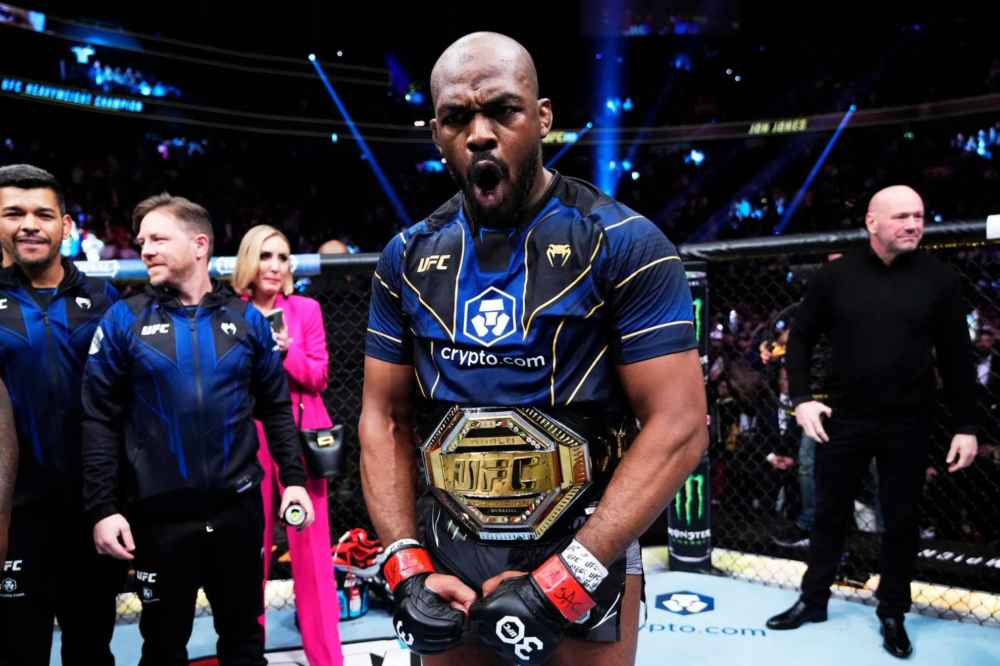
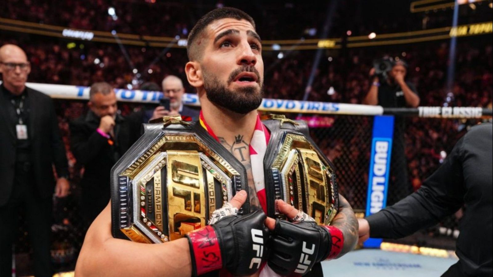
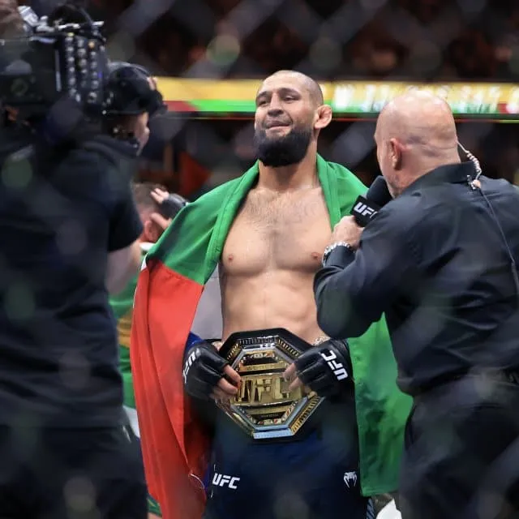
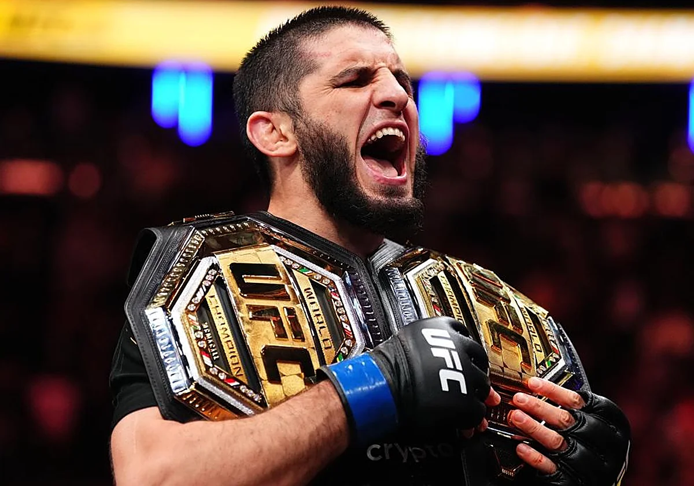
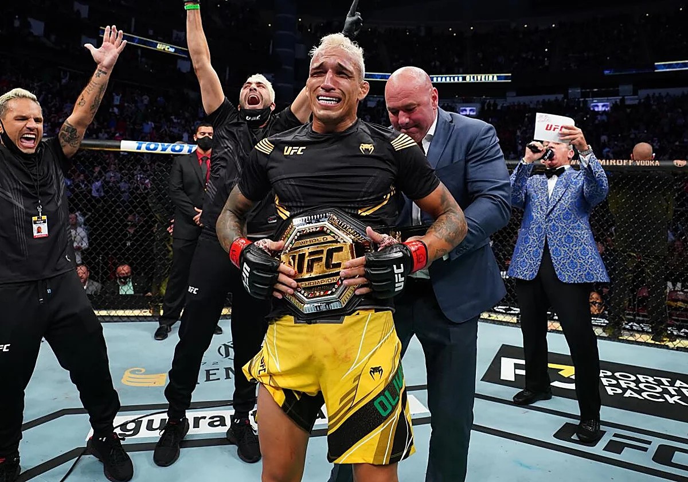
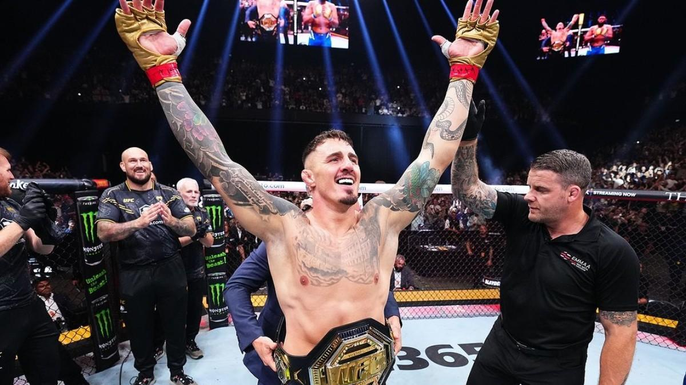
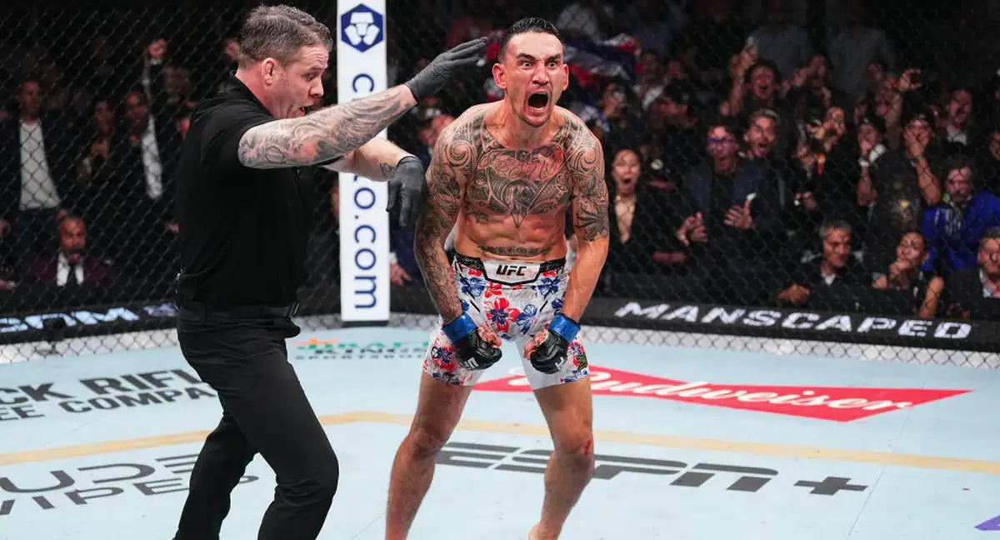
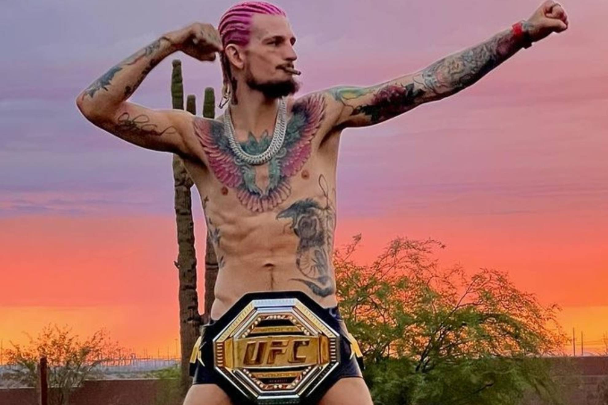
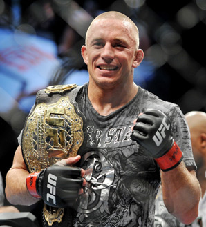

Conor McGregor
Ex campeón de peso pluma y ligero.
La mayor organización de artes marciales mixtas del mundo.
Ex campeón de peso pluma y ligero.

Uno de los mejores peleadores de la historia.

Campeón invicto de peso ligero.

Campeón invicto de peso ligero y ex.campeon de peso pluma

Campeón de peso medio

Campeón Mundial de Peso Wélter de UFC y ha sido Campeón Mundial de Peso Ligero de UFC

Campeón del cinturón BMF

Campeón actual de peso pesado

Ex-Campeón de peso pluma

Dos veces campeón de peso medio de la UFC

Campeón de peso gallo

Fue campeón de peso wélter en dos ocasiones (nueve defensas) y campeón de peso medio en 2017
La Ultimate Fighting Championship (UFC) es la organización de artes marciales mixtas (MMA) más famosa del mundo. Su historia empieza en los años 90 y ha cambiado mucho con el tiempo. Origen de la UFC (1993) La UFC se creó en 1993 en Estados Unidos. Fue fundada por Art Davie y Rorion Gracie. El objetivo era ver qué arte marcial era la más efectiva en una pelea real. El primer evento fue UFC 1 en Denver. En ese evento participaron luchadores de distintos estilos como: boxeo karate lucha libre jiu-jitsu brasileño sumo El ganador fue Royce Gracie, que usó jiu-jitsu brasileño para vencer a rivales mucho más grandes. La época sin reglas En los primeros años la UFC era muy diferente a hoy: casi no había reglas no había categorías de peso los combates podían ser muy violentos Por esto muchos políticos criticaron el deporte. El senador John McCain llegó a llamarlo “peleas de gallos humanas” y varios estados lo prohibieron. Cambio de reglas y evolución Para sobrevivir, la UFC empezó a cambiar: se añadieron categorías de peso se introdujeron guantes se prohibieron golpes peligrosos se crearon asaltos y árbitros Así nacieron las reglas modernas del MMA. Compra de la UFC (2001) En 2001 la empresa Zuffa, dirigida por los hermanos Lorenzo Fertitta y Frank Fertitta III, compró la UFC. Nombraron presidente a Dana White. Ellos cambiaron completamente el negocio y ayudaron a que el deporte creciera. Explosión de popularidad En 2005 el reality show The Ultimate Fighter hizo que la UFC se volviera muy popular. La final entre Forrest Griffin y Stephan Bonnar es considerada una de las peleas que salvó el deporte. UFC moderna Hoy la UFC organiza eventos en todo el mundo y tiene grandes estrellas como: Conor McGregor Jon Jones Khabib Nurmagomedov Islam Makhachev Ilia Topuria En 2016 la empresa Endeavor Group Holdings compró la UFC por unos 4.000 millones de dólares, convirtiéndola en una de las ligas deportivas más grandes del mundo..